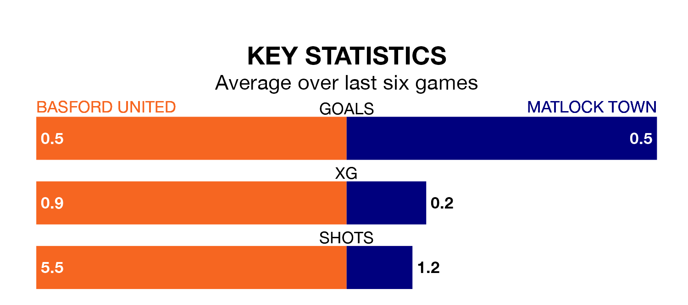

Basford United and Matlock Town both come into Saturday's kick-off at Greenwich Avenue in poor form, having picked up two and four points respectively in their last six games.
Basford have drawn two and lost four of the last six, while Matlock have taken one win and one draw.
In the last 10 years, Basford and Matlock have played each other on nine occasions. Basford won two of them, Matlock five, and they drew twice.
On average, Basford scored 1.4 goals and Matlock 1.3 in those matches.
Their last meeting was on October 24, when Matlock won 2-0 at home.
Basford are 18th in the table after 33 games, of which they have won five and drawn nine, earning 24 points.
Matlock are five places ahead of United in 13th, with 13 wins and five draws putting them on 44 points.
With 30 goals in 33 games so far this season, the home side are the league's joint-third-lowest scorers with 0.9 goals per game. And they are conceding more than average, letting in 55 goals at a rate of 1.7 per game.
Town, meanwhile, are above average scorers, with 1.7 goals per game, compared to a league average of 1.6. They have also conceded 1.7 goals per game.
Basford's last match was on March 2, a 1-0 loss against Lancaster City.
Matlock beat Lancaster City 2-1 last time out, on March 9.
Updated: 15:10 (UTC), 15/03/24